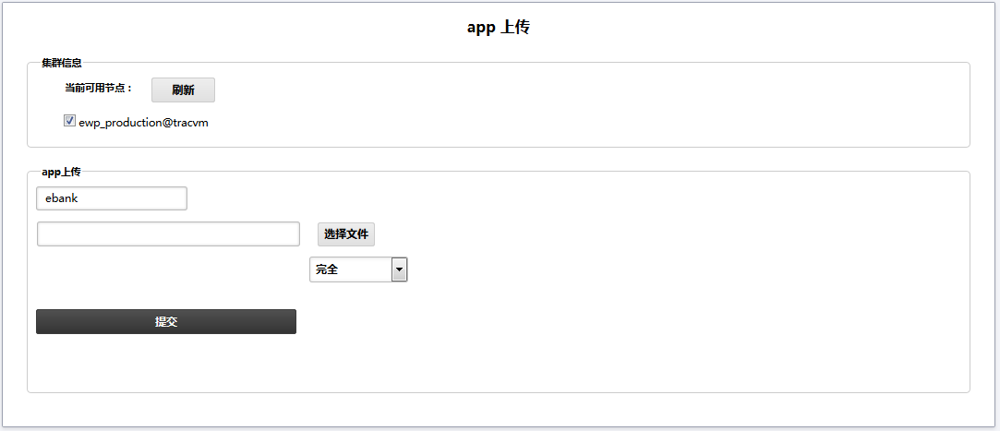
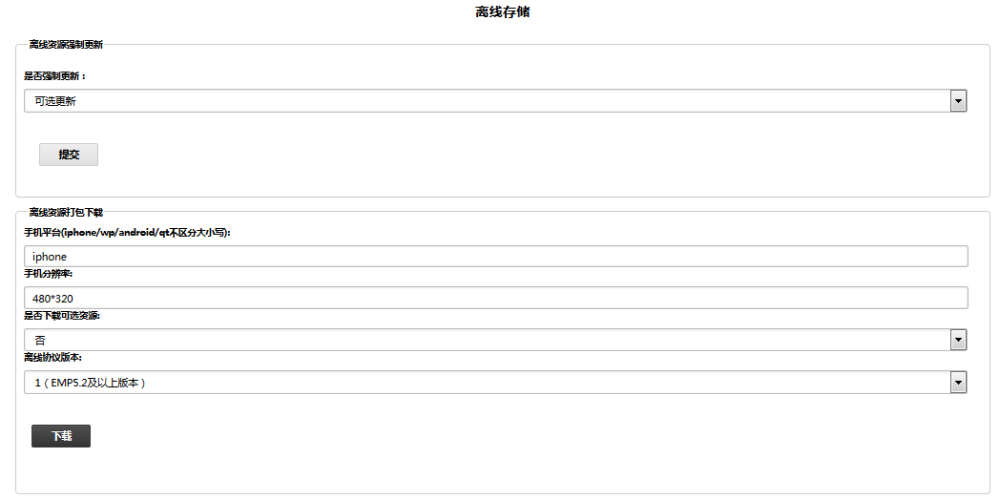
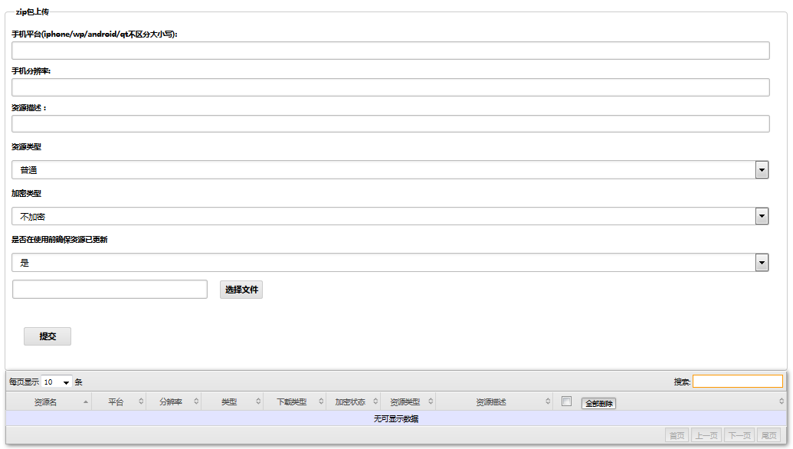
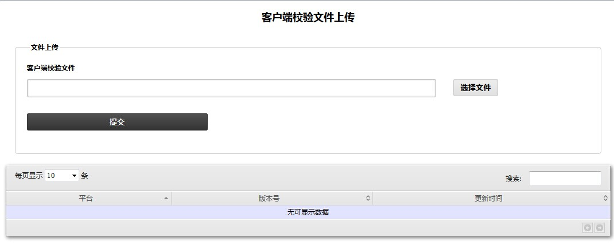

- Introduction
- 1. EMP5.4技术白皮书
- 2. EMP 安全
-
3. EMP界面开发规范
- 3.1. 变更记录
- 3.2. CSS样式
- 3.3. 属性
-
3.4. 界面标签
- 3.4.1. 控件支持属性和样式对照表
- 3.4.2. 布局规则
- 3.4.3. Table布局规则
- 3.4.4. 对齐算法
-
3.4.5. 基本标签
- 3.4.5.1. Body
- 3.4.5.2. Div
- 3.4.5.3. Table & Tr & Td & Th
- 3.4.5.4. Image
- 3.4.5.5. Select & Option
- 3.4.5.6. Button
- 3.4.5.7. InputText
- 3.4.5.8. Password
- 3.4.5.9. Radio
- 3.4.5.10. Checkbox
- 3.4.5.11. Hidden
- 3.4.5.12. Webview
- 3.4.5.13. Segment
- 3.4.5.14. Switch
- 3.4.5.15. Link
- 3.4.5.16. Label
- 3.4.5.17. I & Em
- 3.4.5.18. B & Strong
- 3.4.5.19. RichText
- 3.4.5.20. Form
- 3.4.5.21. Br
- 3.4.6. 定制标签
- 3.5. Lua
- 4. EMP开发配置
- 5. EWP5.4管理后台功能说明文档
- 6. EWP API
- 7. EWP Manual
- Generated using GitBook
资源管理
资源管理模块包括四个部分，app 上传，app 状态管理, 离线存储和校验文件上传。App 上传的主要功能是对某个或多个 ewp 节点上传 app 客户端程序；app 状态管理是对各 app 节点部署的应用进行开启和关闭的管理；离线存储的主要功能是对服务器的资源文件进行管理，包括上传和删除；校验文件上传的主要功能是防止客户端被篡改。
app上传
用户点击 app 上传二级菜单进入 app 上传界面，整个界面分两个区域（根据应用名称刷新节点并选择区域， app 客户端程序上传区域），界面如图所示:

集群信息区域：
点击刷新按钮，会列出当前 app 的全部节点，勾选单个或多个节点，可以对选中节点上传 app 程序。
App上传：
选中单个或多个节点后，点击选择文件按钮，选择客户端程序的 zip 压缩包，类型选择完全，点击【提交】按钮，就会将客户端程序上传到指定目录文件下，一般为 /var/www/apps/。
上传的方式分为完全和增量两种，完全表示如果指定目录存在相同的客户端程序进行完全覆盖，如果为增量方式，表示增加指定目录下不存在的内容。
app 状态管理
用户点击 app 状态管理二级菜单进入 app 状态管理界面，界面如图所示:
输入 app 名称，比如输入 ebank，点击刷新按钮，会列出包含该 app 的全部节点信息，通过点击开启和关闭按钮来控制对应节点应用的启停。
离线存储
用户点击离线存储二级菜单进入离线存储界面，整个界面分四个功能区域（离线资源强制更新，离线资源打包下载，zip 包上传，zip 包删除），界面如图所示:
 
离线资源强制更新：
选择可选更新或者强制更新选项确定客户端更新离线资源的方式。
离线资源打包下载：
输入手机平台（iphone / wp / android / qt）和手机分辨率 (例如 480*320), 选择是否下载可选资源和离线协议版本, 点击【提交】按钮, 系统会将对应的离线资源打包并下载。
Zip 包上传：
输入手机平台，手机分辨率，资源描述，选择资源类型，加密类型，上传资源文件，点击【提交】按钮，系统会根据资源的平台和分辨率将资源放在对应的目录下。一般为
/var/www/apps/ebank/public/www/resources/，该目录结构下会按照平台生成不同的文件夹，每个平台文件夹下会生成分辨率文件夹，对应文件夹下为上传的资源文件。
手机平台目前支持 iphone，android，winphone。
分辨率可按照不同的手机分辨率进行填写，格式举例为：480*320。
离线存储的资源文件按照如下结构存储：

解释：
如果完整填写平台信息，分辨率信息，资源类型，进行上传离线资源文件，会在 resources 文件夹下生成
平台文件夹/分辨率文件夹/文件类型文件夹/资源文件，若上传的资源类型不是普通文件，而是插件类型，文件类型文件夹为 zip，zip 文件夹下为不自动解压的 zip 文件。如果完整填写平台信息，不填写分辨率信息，填写资源类型，进行上传离线资源文件，会在 resources 文件夹下生成
平台文件夹/common文件夹/文件类型文件夹/资源文件，若上传的资源类型不是普通文件，而是插件类型，文件类型文件夹为 zip，zip 文件夹下为不自动解压的 zip 文件。如果不填写平台信息，无论是否填写分辨率信息，填写资源类型，进行上传离线资源文件，会在 resources 文件夹下生成
common通用文件夹/文件类型文件夹/资源文件，若上传的资源类型不是普通文件，而是插件类型，文件类型文件夹为 zip，zip 文件夹下为不自动解压的 zip 文件。此处没有分辨率文件夹
如果没有输入平台，则该资源作为通用资源，所有平台的客户端都可以使用；会在平台文件夹同级生成 common 的文件夹，如果有平台没有分辨率，则该资源作为该平台下的通用资源，该平台下的所有分辨率的客户端都可以使用。平台文件夹下会生成 common 分辨率文件夹，对应文件夹内为通用资源，若通用平台文件夹下会区分分辨率，则会对应生成分辨率文件夹。
资源类型分为普通和插件两种，插件资源一般指一个完整的功能插件，通常为 zip 包，上传后系统不会对 zip 包进行解压，会在对应分辨率文件夹下生成 ZIP 文件夹，文件夹内存放上传的 zip 压缩包。如果非插件形式的资源文件，选择普通文件上传，如果是单个文件上传，会直接存放在对应的分辨率文件夹内，如果是压缩的 zip 包（注明：此处一定要将多个文件先放到一个文件夹后再压缩，不支持直接将多个文件夹压缩），系统会自动解压并将解压后的内容存放到分辨率文件夹下。
当手机客户端程序运行时，会从对应平台，分辨率下获取相应的资源文件。
上传某平台某分辨率的离线资源后，会生成对应的描述文件，一般存放在 /var/www/apps/ebank/public/www/resources/desc 目录下，当运行客户端时，客户端会和描述文件进行比对，如果客户端本地的离线资源与服务器上的离线资源不同，就会提示客户端有新的离线资源需要下载，用户可以选择更新或取消，如果取消离线资源更新，将使用客户端本地旧资源，如果更新离线资源，客户端将使用更新后的离线资源。
Zip 包删除：
zip 包列表区域显示当前系统使用的全部资源，可以根据对应的平台，分辨率，文件类型，资源名称删除已存在的资源。
如果没有平台信息，则删除通用目录（common）下的对应文件；如果有平台没有分辨率信息，则删除该平台下的通用目录（common）中的对应文件。
校验文件上传
用户点击校验文件上传二级菜单进入客户端校验文件上传界面，界面如图所示:

点击选择文件按钮，选择客户端安装包，点击【提交】按钮后，列表中会显示已上传文件的信息（平台，版本号及更新时间）。